综述 终端 IO 的工作模式：
规范模式输入处理（默认模式）
非规范模式输入处理
POSIX.1 定义了 11 个特殊输入字符，其中 9 个可更改。如 Ctrl+D 是文件结束符，Ctrl+Z 是挂起字符。
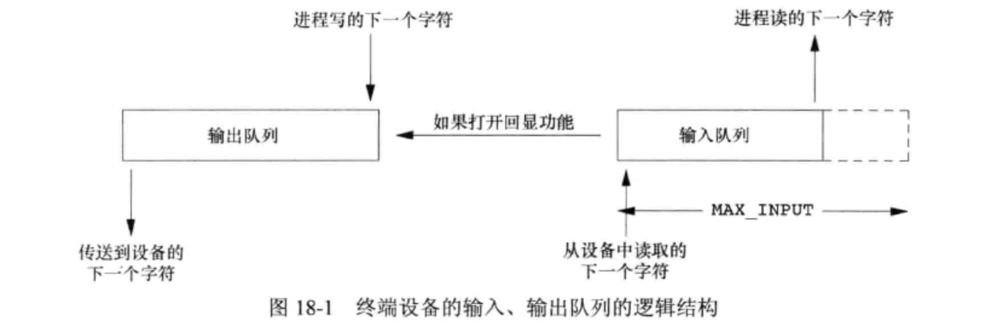
终端设备是由通常位于内核中的终端驱动程序控制的。每个终端设备都有一个输入队列和输出队列。
若打开了回显功能，则在输入队列和输出队列之间有一个隐含的连接。
输入队列长度限制：MAX_INPUT。当一个特定设备的输入队列已经填满时，系统的行为依赖于实现，大多数 UNIX 系统回显响铃字符。
输入行的最大字节数限制：MAX_CANON
输出队列的长度也是由限制的，但程序并不能获取。输出队列将要填满时，内核会使写进程休眠，直至写队列中有可用空间。
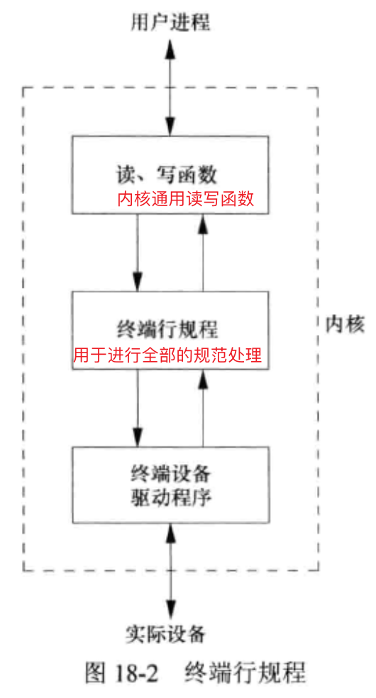
termios.h 头文件
所有可以检测和更改的终端设备特性都包含在 termios 机构中，该结构定义在头文件 termios.h 中。
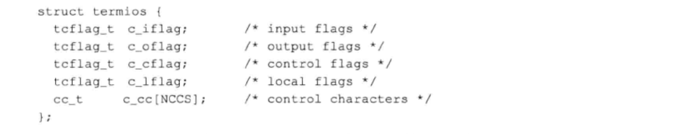
输入标志 c_iflag：通过终端设备驱动程序控制字符的输入。如剥除输入字节的第 8 位、允许输入奇偶校验等。
输出标志 c_oflag：控制驱动程序输出。如执行输入处理、将换行符转换为 CR/LF 等。
控制标志 c_cflag：影响 RS-232 串行线。如忽略调制解调器的状态线、每个字符的一个或两个停止位。
本地标志 c_lflag：影响驱动程序和用户之间的接口。如回显打开或关闭、可视地擦除字符、允许终端产生的信号以及对后台输出的作业控制停止信号。
控制字符数组 c_cc：包含了所有可以更改的特殊字符。cc_t 类型的长度足以保存每个特殊字符，典型的时 unsigned char。
类型 tfflag_t 的长度足以保存每个标志值，常被定义为 unsigned int 或 unsigned long
图 18-3 至 18-6 列出了所有可以更改以影响终端设备特性的终端标志：
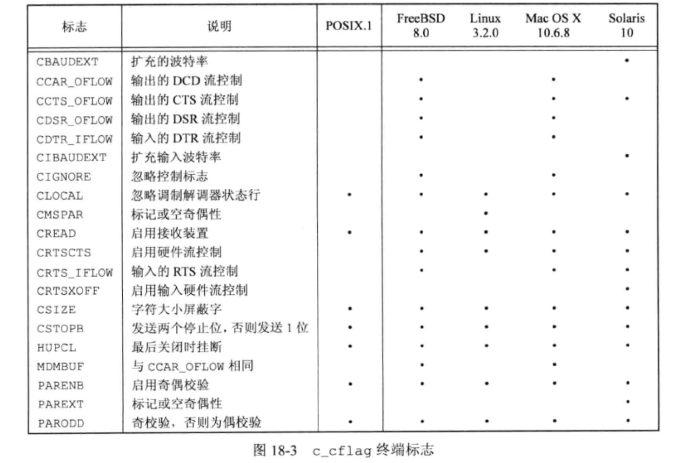
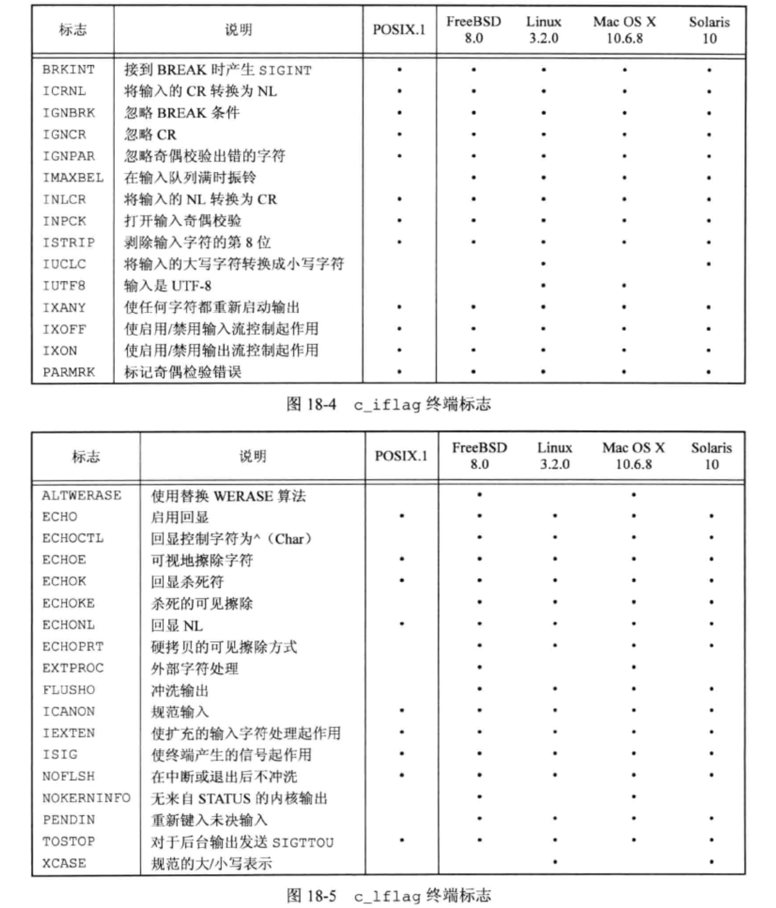
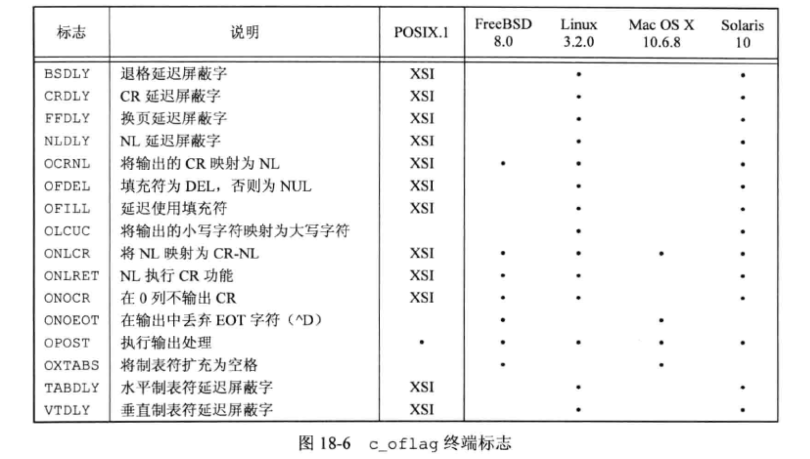
检测和更改终端设备特定的函数：
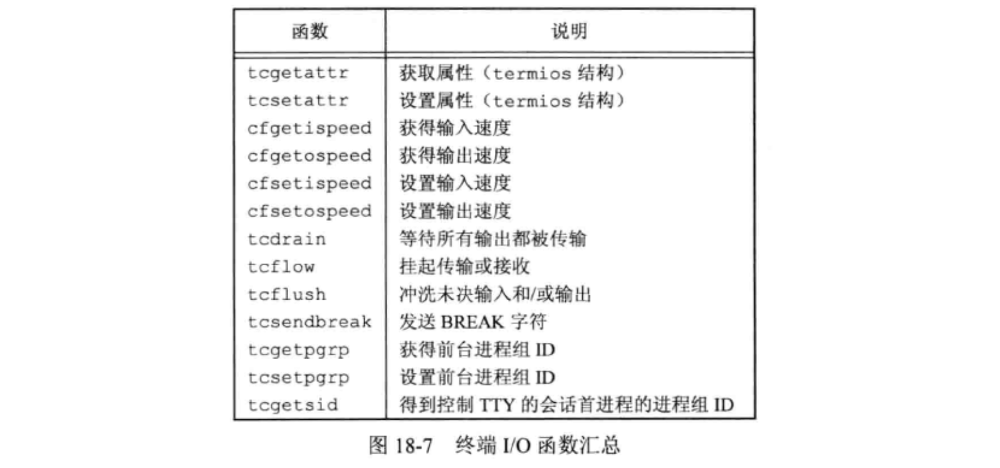
这 13 个函数之间的关系如下图：
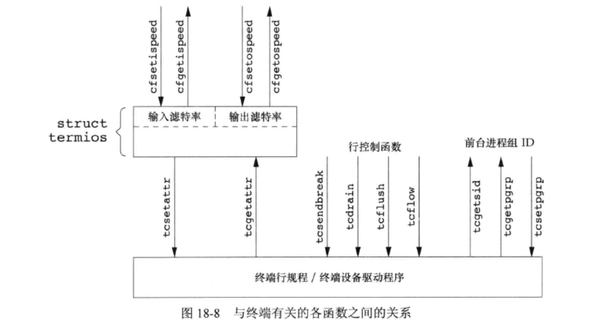
特殊输入字符 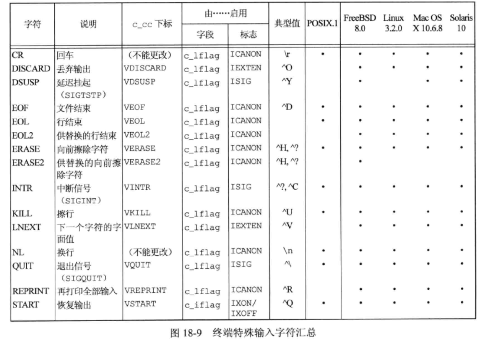
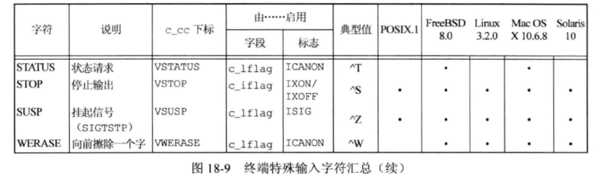
POSIX.1 要求换行符和回车符（分别是 \n 和 \r）或者 STOP(Ctrl+S) 和 START(Ctrl+Q) 字符（依赖于实现）。
通过更改 termios 结构中国的 c_cc 数组的相应项可以更改特殊字符的值，其中数组的下标以字母 V 开头。
c_cc 数组中某项设置为 _POSIX_VDISABLE 表示禁止使用相应特殊字符。
1 2 3 4 5 6 7 8 9 10 11 12 13 14 15 16 17 18 19 20 21 22 23 24 25 26 27 28 29 30 #include "apue.h" #include <termios.h> int test_istty (void ) { struct termios term ; long vdisable; if (isatty(STDIN_FILENO) == 0 ) err_quit("standard input is not a terminal device" ); if ((vdisable = fpathconf(STDIN_FILENO, _PC_VDISABLE)) < 0 ) err_quit("fpathconf error or _POSIX_VDISABLE not in effect" ); if (tcgetattr(STDIN_FILENO, &term) < 0 ) err_sys("tcgetattr error" ); term.c_cc[VINTR] = vdisable; term.c_cc[VEOF] = 2 ; term.c_cc[VKILL] = vdisable; if (tcsetattr(STDIN_FILENO, TCSANOW, &term) < 0 ) err_sys("tcsetattr error" ); printf ("%s\n" ,"successfully by yfs" ); exit (0 ); }
程序说明：
禁用中断键与忽略中断信号时不同的。本程序只是禁用使终端驱动程序产生 SIGINT 信号的特殊字符，我们仍旧可以使用 kill 函数将该信号发送至进程。
大多数特殊字符在被终端驱动程序识别并进行特殊处理后会被丢弃，并不将它们返回给执行读终端操作的进程。返回给读进程的例外字符是换行符（NL、EOL、EOL2）和回车符（CR）。
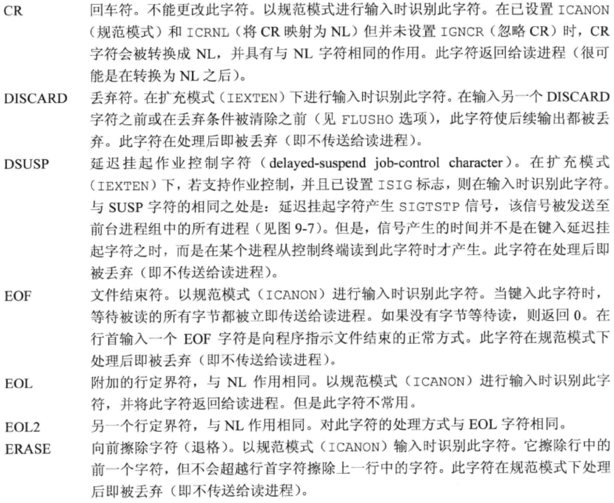
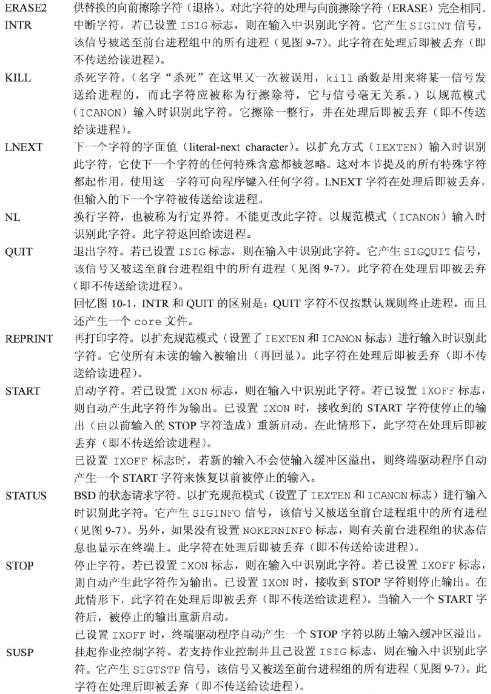
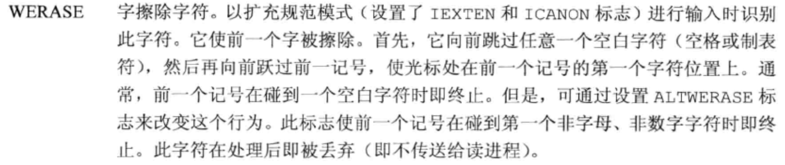
BREAK 字符：BREAK 实际上并不是一个字符而是在异步串行数据传送时发生的一个条件。根据串行接口的不同，可有多种方式通知设备驱动程序发生了 BREAK 条件。
获得和设置终端属性 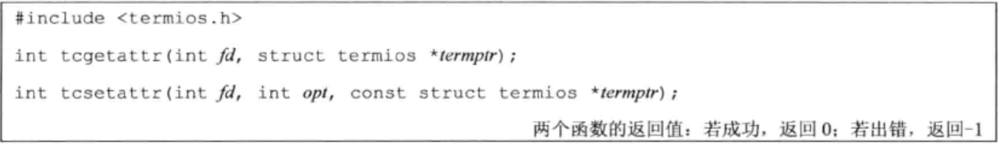
用于获取或设置各种终端选项标志和特殊字符。这两个函数仅对于终端设备进行操作，所以若 fd 没有引用终端设备则出错返回 -1，errno 设置为 ENOTTY。
opt 参数说明：
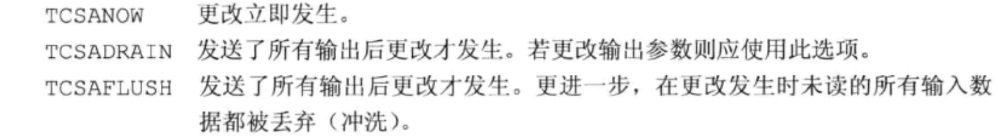
tcsetattr 函数的返回状态易混淆，即使未能执行所有要求的动作，它也返回 OK，当返回 OK 时，仍需调用 tcgetattr 检查是否属性设置成功。
终端选项标志 列出的所有选项标志（除屏蔽字标志外）都用一位或多位（设置或清除）表示。
屏蔽字表示定义多个位，它们组合在一起，可以定义一组值。屏蔽字标志有一个定义名，每个值也有一个名字。例如，为了设置字符长度，首先用字符长度屏蔽字标志 CSIZE 将表示字符长度的位清 0，然后设置下列值之一：CS5, CS6, CS7, CS8。
1 2 3 4 5 6 7 8 9 10 11 12 13 14 15 16 17 18 19 20 21 22 23 24 25 26 27 28 29 30 31 32 33 34 35 36 37 #include "apue.h" #include <termios.h> int main (void ) { struct termios term ; if (tcgetattr(STDIN_FILENO, &term) < 0 ) err_sys("tcgetattr error" ); switch (term.c_cflag & CSIZE) { case CS5: printf ("5 bits/byte\n" ); break ; case CS6: printf ("6 bits/byte\n" ); break ; case CS7: printf ("7 bits/byte\n" ); break ; case CS8: printf ("8 bits/byte\n" ); break ; default : printf ("unknown bits/byte\n" ); } term.c_cflag &= ~CSIZE; term.c_cflag |= CS8; if (tcsetattr(STDIN_FILENO, TCSANOW, &term) < 0 ) err_sys("tcsetattr error" ); exit (0 ); }
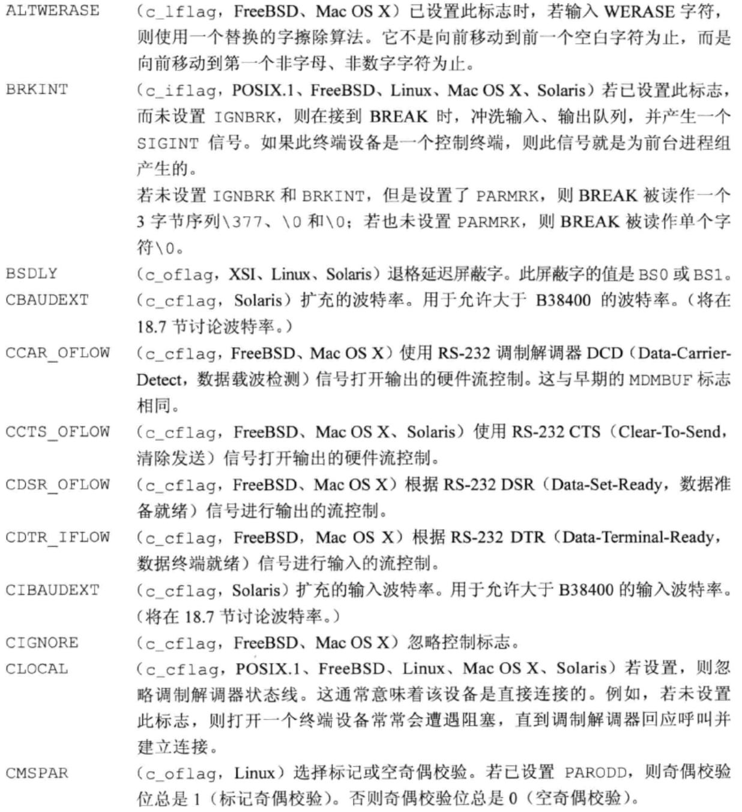
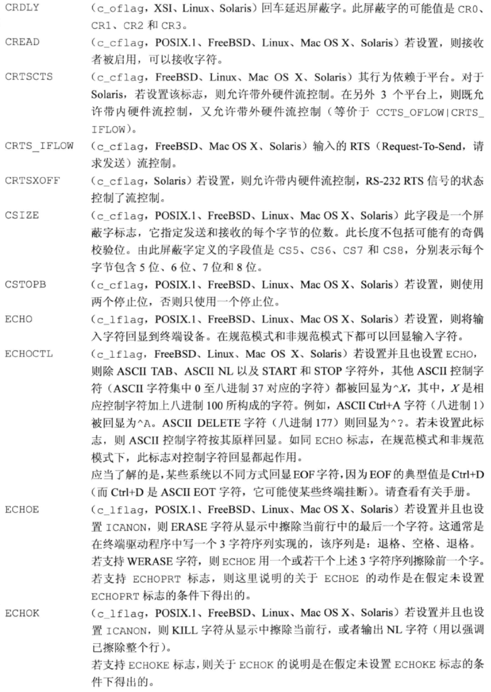
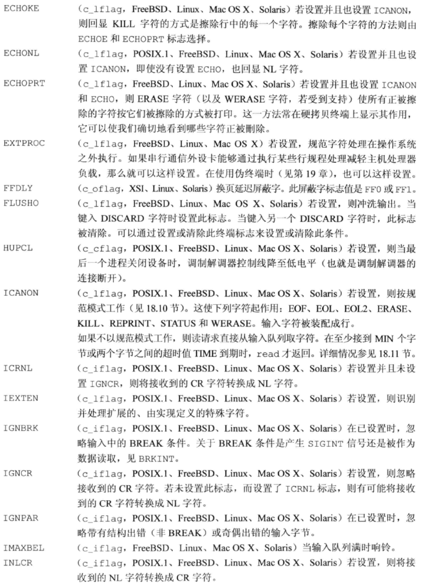
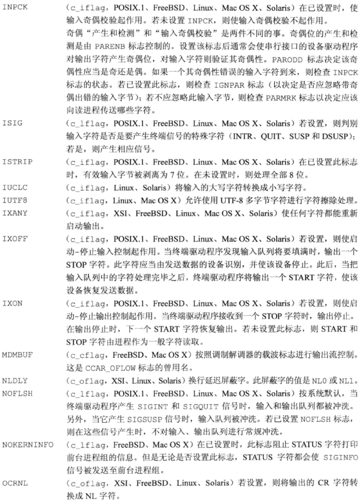
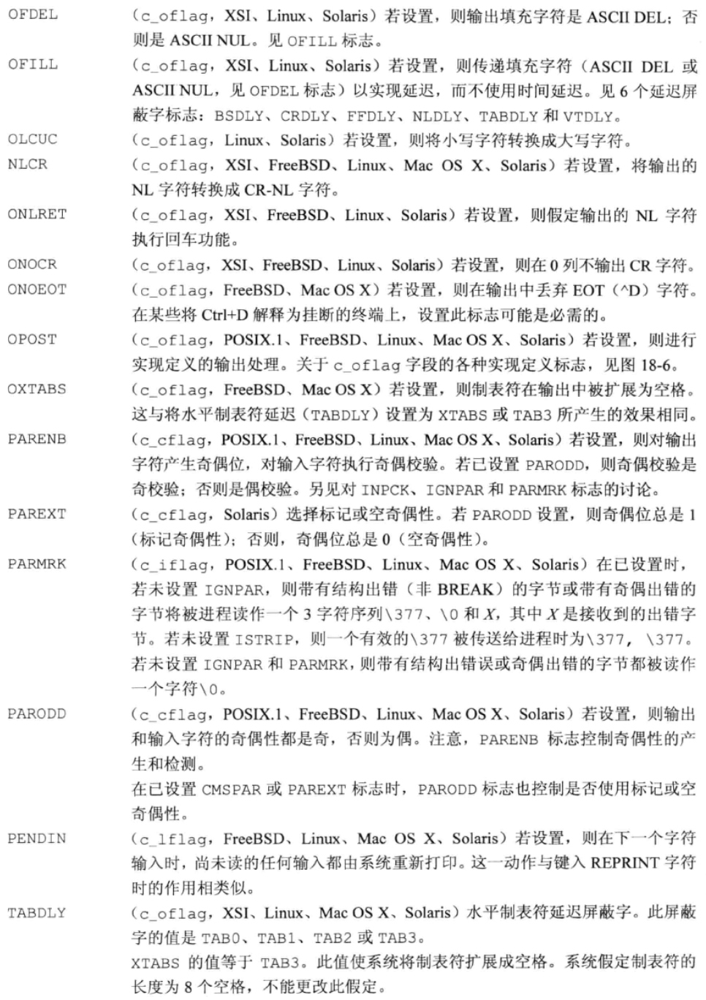
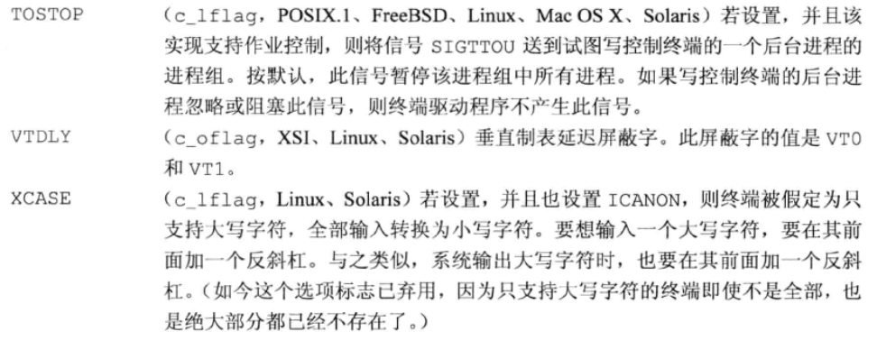
stty 命令 stty 的作用等同于 tcgetattr 和 tcsetattr 函数，用于检查和更改终端选项。
1 2 3 4 5 6 7 8 9 10 11 12 13 14 15 16 ❯ stty -a speed 38400 baud; 40 rows; 127 columns; lflags: icanon isig iexten echo echoe echok echoke -echonl echoctl -echoprt -altwerase -noflsh -tostop -flusho pendin -nokerninfo -extproc iflags: -istrip icrnl -inlcr -igncr ixon -ixoff ixany imaxbel iutf8 -ignbrk brkint -inpck -ignpar -parmrk oflags: opost onlcr -oxtabs -onocr -onlret cflags: cread cs8 -parenb -parodd hupcl -clocal -cstopb -crtscts -dsrflow -dtrflow -mdmbuf cchars: discard = ^O; dsusp = ^Y; eof = ^D; eol = <undef>; eol2 = <undef>; erase = ^?; intr = ^C; kill = ^U; lnext = ^V; min = 1; quit = ^\; reprint = ^R; start = ^Q; status = ^T; stop = ^S; susp = ^Z; time = 0; werase = ^W;
1 2 3 4 5 6 7 8 9 10 11 12 13 14 ❯ stty -a < /dev/ttyw7 speed 0 baud; 0 rows; 0 columns; lflags: -icanon -isig -iexten -echo -echoe -echok -echoke -echonl -echoctl -echoprt -altwerase -noflsh -tostop -flusho -pendin -nokerninfo -extproc iflags: -istrip -icrnl -inlcr -igncr -ixon -ixoff -ixany -imaxbel -iutf8 -ignbrk -brkint -inpck -ignpar -parmrk oflags: -opost -onlcr -oxtabs -onocr -onlret cflags: -cread cs5 -parenb -parodd -hupcl -clocal -cstopb -crtscts -dsrflow -dtrflow -mdmbuf cchars: discard = ^@; dsusp = ^@; eof = ^@; eol = ^@; eol2 = ^@; erase = ^@; intr = ^@; kill = ^@; lnext = ^@; min = 0; quit = ^@; reprint = ^@; start = ^@; status = ^@; stop = ^@; susp = ^@; time = 0; werase = ^@;
波特率函数 波特率单位是 bit / s （bit per second），大多数终端设备的输入和输出使用同一波特率，若硬件支持，可以将他们设置为不同值。
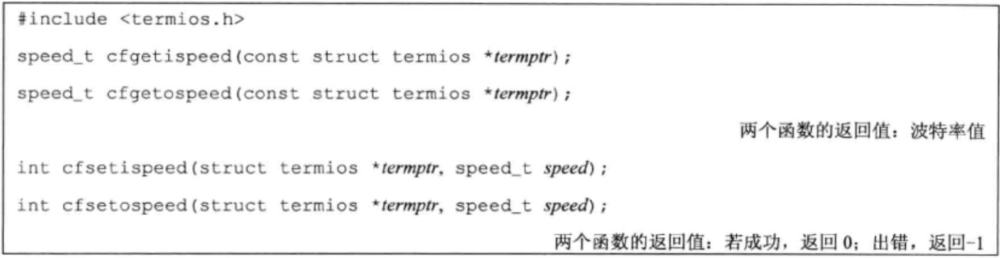
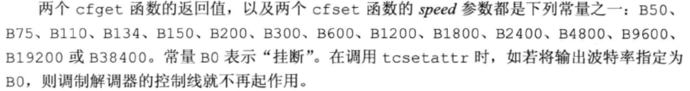
输入、输出波特率是存储在设备的 termios 结构中的。更改时需调用 tcsetattr 函数。
行控制函数 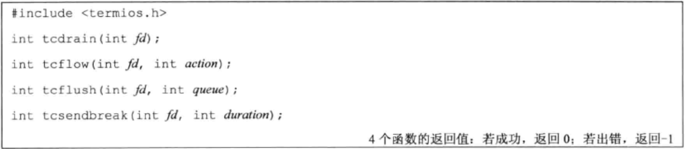
4 个函数中的 fd 参数要求引用一个终端设备，否则出错返回 -1，errno 设置为 ENOTTY。
tcdrain：等待所有输出都被传递。
tcflow：用于对输入和输出流控制进行控制
tcflush：冲洗（抛弃）输入缓冲区（其中的数据是终端驱动程序已接收到，但用户程序尚未读取的）或输出缓冲区（其中的数据是用户程序已经写入，但尚未被传递的）。
tcsendbreak：在指定的时间区间内发送连续的 0 值位流。若 duration 参数为 0，则此中种传递延续 0.25 ～ 0.5s。若非 0，则传递时间依赖于实现。
终端标识 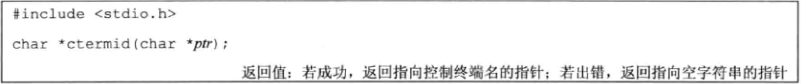
函数说明
参数说明
1 2 3 4 5 6 7 8 9 10 11 12 13 #include <stdio.h> #include <string.h> static char ctermid_name[L_ctermid];char *ctermid (char *str) { if (str == NULL ) str = ctermid_name; return (strcpy (str, "/dev/tty" )); }
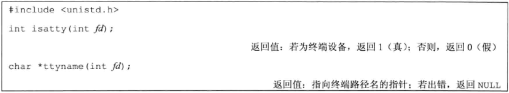
函数说明
1 2 3 4 5 6 7 8 9 10 #include <termios.h> int isatty (int fd) { struct termios ts ; return (tcgetattr(fd, &ts) != -1 ); }
1 2 3 4 5 6 7 8 9 10 11 12 13 14 15 16 17 18 19 20 21 22 23 24 25 26 27 28 29 30 31 32 33 34 35 36 37 38 39 40 41 42 43 44 45 46 47 48 49 50 51 52 53 54 55 56 57 58 59 60 61 62 63 64 65 66 67 68 69 70 71 72 73 74 75 76 77 78 79 80 81 82 83 84 85 86 87 88 89 90 91 92 93 94 95 96 97 98 99 100 101 102 103 104 105 106 107 108 109 110 111 112 113 114 115 116 117 118 119 120 121 122 123 124 125 126 127 128 129 130 131 132 133 134 135 #include <sys/stat.h> #include <dirent.h> #include <limits.h> #include <string.h> #include <termios.h> #include <unistd.h> #include <stdlib.h> struct devdir { struct devdir *d_next ; char *d_name; }; static struct devdir *head ;static struct devdir *tail ;static char pathname[_POSIX_PATH_MAX + 1 ];static void add (char *dirname) { struct devdir *ddp ; int len; len = strlen (dirname); if ((dirname[len-1 ] == '.' ) && (dirname[len-2 ] == '/' || (dirname[len-2 ] == '.' && dirname[len-3 ] == '/' ))) return ; if (strcmp (dirname, "/dev/fd" ) == 0 ) return ; if ((ddp = malloc (sizeof (struct devdir))) == NULL ) return ; if ((ddp->d_name = strdup(dirname)) == NULL ) { free (ddp); return ; } ddp->d_next = NULL ; if (tail == NULL ) { head = ddp; tail = ddp; } else { tail->d_next = ddp; tail = ddp; } } static void cleanup (void ) { struct devdir *ddp , *nddp ; ddp = head; while (ddp != NULL ) { nddp = ddp->d_next; free (ddp->d_name); free (ddp); ddp = nddp; } head = NULL ; tail = NULL ; } static char *searchdir (char *dirname, struct stat *fdstatp) { struct stat devstat ; DIR *dp; int devlen; struct dirent *dirp ; strcpy (pathname, dirname); if ((dp = opendir(dirname)) == NULL ) return (NULL ); strcat (pathname, "/" ); devlen = strlen (pathname); while ((dirp = readdir(dp)) != NULL ) { strncpy (pathname + devlen, dirp->d_name, _POSIX_PATH_MAX - devlen); if (strcmp (pathname, "/dev/stdin" ) == 0 || strcmp (pathname, "/dev/stdout" ) == 0 || strcmp (pathname, "/dev/stderr" ) == 0 ) continue ; if (stat(pathname, &devstat) < 0 ) continue ; if (S_ISDIR(devstat.st_mode)) { add(pathname); continue ; } if (devstat.st_ino == fdstatp->st_ino && devstat.st_dev == fdstatp->st_dev) { closedir(dp); return (pathname); } } closedir(dp); return (NULL ); } char *ttyname (int fd) { struct stat fdstat ; struct devdir *ddp ; char *rval; if (isatty(fd) == 0 ) return (NULL ); if (fstat(fd, &fdstat) < 0 ) return (NULL ); if (S_ISCHR(fdstat.st_mode) == 0 ) return (NULL ); rval = searchdir("/dev" , &fdstat); if (rval == NULL ) { for (ddp = head; ddp != NULL ; ddp = ddp->d_next) if ((rval = searchdir(ddp->d_name, &fdstat)) != NULL ) break ; } cleanup(); return (rval); }
1 2 3 4 5 6 7 8 9 10 11 12 13 14 15 16 17 18 19 20 21 22 23 24 25 26 27 28 29 30 31 32 33 34 35 36 37 38 39 40 41 42 43 44 45 46 47 48 49 50 51 52 53 54 55 56 57 58 59 60 61 62 63 64 65 66 67 68 69 #include "apue.h" int test_ttyname (void ) { char *name; if (isatty(0 )) { name = ttyname(0 ); if (name == NULL ) name = "undefined" ; } else { name = "not a tty" ; } printf ("fd 0: %s\n" , name); if (isatty(1 )) { name = ttyname(1 ); if (name == NULL ) name = "undefined" ; } else { name = "not a tty" ; } printf ("fd 1: %s\n" , name); if (isatty(2 )) { name = ttyname(2 ); if (name == NULL ) name = "undefined" ; } else { name = "not a tty" ; } printf ("fd 2: %s\n" , name); if (isatty(3 )) { name = ttyname(3 ); if (name == NULL ) name = "undefined" ; } else { name = "not a tty" ; } printf ("fd 3: %s\n" , name); if (isatty(4 )) { name = ttyname(4 ); if (name == NULL ) name = "undefined" ; } else { name = "not a tty" ; } printf ("fd 4: %s\n" , name); exit (0 ); } [root@VM-0 -6 -centos output]# ./main fd 0 : /dev/pts/7 fd 1 : /dev/pts/7 fd 2 : /dev/pts/7 fd 3 : not a tty fd 4 : not a tty [root@VM-0 -6 -centos output]# ./main < /dev/console 2 > /dev/null fd 0 : /dev/console fd 1 : /dev/pts/7 fd 2 : not a tty fd 3 : not a tty fd 4 : not a tty
规范模式 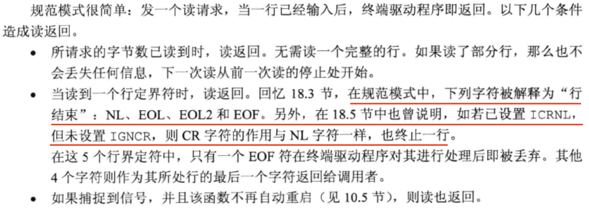
1 2 3 4 5 6 7 8 9 10 11 12 13 14 15 16 17 18 19 20 21 22 23 24 25 26 27 28 29 30 31 32 33 34 35 36 37 38 39 40 41 42 43 #include <signal.h> #include <stdio.h> #include <termios.h> #define MAX_PASS_LEN 8 char *getpass (const char *prompt) { static char buf[MAX_PASS_LEN + 1 ]; char *ptr; sigset_t sig, osig; struct termios ts , ots ; FILE *fp; int c; if ((fp = fopen(ctermid(NULL ), "r+" )) == NULL ) return (NULL ); setbuf(fp, NULL ); sigemptyset(&sig); sigaddset(&sig, SIGINT); sigaddset(&sig, SIGTSTP); sigprocmask(SIG_BLOCK, &sig, &osig); tcgetattr(fileno(fp), &ts); ots = ts; ts.c_lflag &= ~(ECHO | ECHOE | ECHOK | ECHONL); tcsetattr(fileno(fp), TCSAFLUSH, &ts); fputs (prompt, fp); ptr = buf; while ((c = getc(fp)) != EOF && c != '\n' ) if (ptr < &buf[MAX_PASS_LEN]) *ptr++ = c; *ptr = 0 ; putc('\n' , fp); tcsetattr(fileno(fp), TCSAFLUSH, &ots); sigprocmask(SIG_SETMASK, &osig, NULL ); fclose(fp); return (buf); }
非规范模式 终端窗口大小 当当前终端窗口大小发生变化时，内核会通知到前台进程组。这在像 vi 编辑器中非常有用，当进程收到信号后可以根据窗口大小重绘屏幕。内核为每个终端和伪终端维护了一个 winsize 结构：
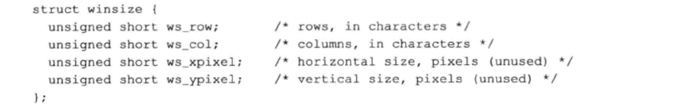
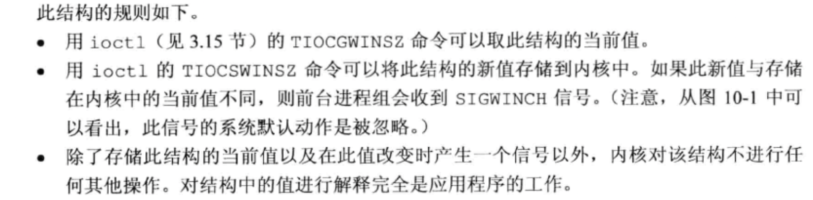
1 2 3 4 5 6 7 8 9 10 11 12 13 14 15 16 17 18 19 20 21 22 23 24 25 26 27 28 29 30 31 32 33 34 35 36 37 38 39 40 41 42 43 44 #include "apue.h" #include <termios.h> #ifndef TIOCGWINSZ #include <sys/ioctl.h> #endif static void pr_winsize (int fd) { struct winsize size ; if (ioctl(fd, TIOCGWINSZ, (char *) &size) < 0 ) err_sys("TIOCGWINSZ error" ); printf ("%d rows, %d columns\n" , size.ws_row, size.ws_col); } static void sig_winch (int signo) { printf ("SIGWINCH received\n" ); pr_winsize(STDIN_FILENO); } int test_winsize (void ) { if (isatty(STDIN_FILENO) == 0 ) exit (1 ); if (signal(SIGWINCH, sig_winch) == SIG_ERR) err_sys("signal error" ); pr_winsize(STDIN_FILENO); for ( ; ; ) pause(); } 15 rows, 99 columnsSIGWINCH received 15 rows, 95 columnsSIGWINCH received 15 rows, 93 columnsSIGWINCH received 15 rows, 99 columns^C
termcap、terminfo 和 curses